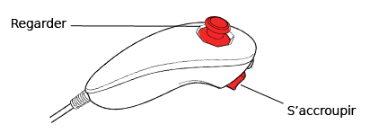

Pour frapper à l’aide de votre arme, balancez la manette Wii Remote vers la gauche ou la droite.
Utilisez la croix directionnelle pour vous déplacer d’un endroit à un autre.
Observez les marques sur le sol et l'indicateur de directions ; vous pouvez vous déplacer jusqu'aux marques les plus proches de l’endroit où vous vous trouvez.
Quand vous affrontez des ennemis, appuyez sur la droite et sur la gauche de la croix directionnelle pour exécuter une esquive.
Appuyez sur pour changer d’armes.
Une fois que vous avez des armes de jet, appuyez sur ou sur (choisir le bouton qui vous convient le mieux), et agitez la manette Wii Remote comme si vous lanciez un objet.
Appuyez sur pour mettre le jeu en pause. Vous pouvez alors redémarrer la partie ou la quitter et revenir au menu principal.
Nunchuk – commandes

Utilisez le levier de contrôle pour regarder autour de vous.
Appuyez sur pour vous accroupir. Vous pouvez ainsi esquiver les objets et frapper les ennemis tout en étant au sol.